Adrenal Glands — Ultrasound · jamesxxx1997
US role & limitations, normal anatomy, scanning technique (right & left), and lesion imaging features (US + CT/MRI). Distilled from imaging notes.
US Role & Limitations
- US is not the primary tool for adrenal evaluation. Image quality depends heavily on operator experience and equipment. Right adrenal is generally easier to visualise than left.
- Normal adrenal, adrenal hyperplasia, and small adenomas usually cannot be adequately assessed by US.
- If labs confirm a hormonally active tumour, proceed directly to CT/MRI — do not rely on US for characterisation.
- US greatest value: detecting (or excluding) non-functioning incidental adrenal masses. Knowing adrenal anatomy matters more than seeing the gland itself.
Hormone-producing tumours that US usually misses: Conn adenoma (aldosteronoma) and Cushing adrenal hyperplasia are typically too small (< 1 cm) to detect on US.
Exception — Pheochromocytoma: The only secreting tumour reliably found on US (≈ 90% detection rate). By the time symptoms are florid, the mass is usually several centimetres. Confirm with CT if suspected.
Adrenal Metastases: Rich adrenal blood supply makes it a common target (bronchial, breast, RCC). US is helpful for detection; appears hypoechoic. Pitfall: do not confuse with renal cortical cysts.
Normal Anatomy & Size
- Normal adrenal: length 3–7 cm, transverse diameter 2–4 cm.
- US appearance: hypoechoic.
Scanning Technique
Right Adrenal
Sandwiched between the right kidney upper pole, liver, and IVC; extends slightly posterior to the IVC.
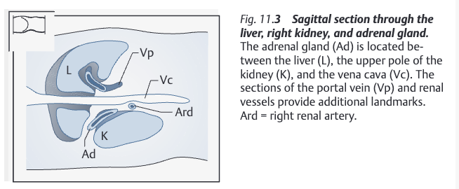
Anatomical diagram — right adrenal (Ad) between liver (L), IVC (Vc), and right kidney upper pole; portal vein (Vp) and renal vessels as landmarks
Longitudinal scan
1
Probe at right mid-clavicular line, longitudinal, angled slightly toward midline to show IVC.
2
Fine-angle toward kidney. Renal vein + artery are landmarks — right adrenal lies a few cm superior to these vessels.
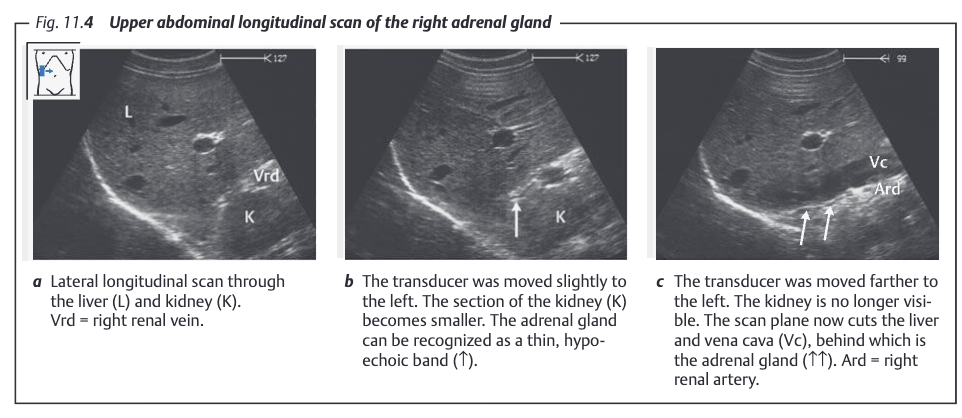
US: longitudinal — right adrenal (hypoechoic) above renal vessels
Transverse scan
1
Transverse scan at right mid-clavicular line; identify liver and IVC.
2
Angle probe caudally until the right kidney upper pole appears — adrenal lies between kidney upper pole and IVC.
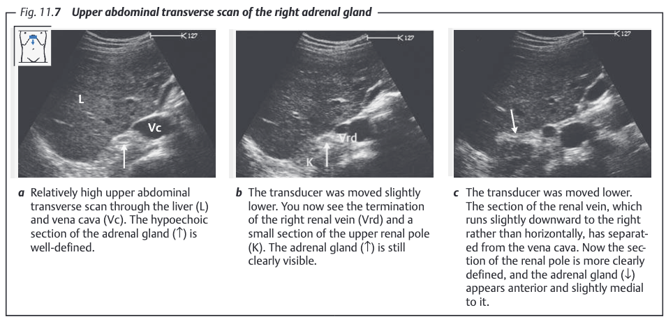
US: transverse — right adrenal between right kidney upper pole and IVC
Left Adrenal
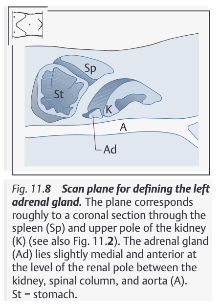
Left adrenal anatomy — tucked between left kidney medial border and aorta, extends inferiorly toward renal hilum (not superiorly like right)
Harder to scan: stomach and bowel gas block the anterior window. Use the spleen as acoustic window — probe on the left flank.
A. Longitudinal flank scan
1
Probe on left lateral flank, longitudinal; capture spleen + left kidney upper pole in view.
2
Tilt probe anteriorly — kidney cross-section shrinks. Just before kidney disappears, the anterior-medial adrenal region comes into view.
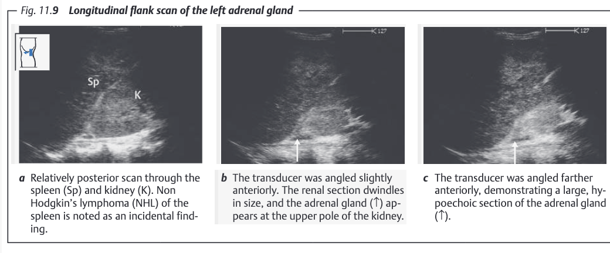
Longitudinal flank — left adrenal anterior to kidney upper pole, between kidney and aorta
B. Transverse flank scan
1
Once identified on longitudinal, rotate probe 90° in-place to transverse.
2
Left adrenal appears on screen left side of kidney, slightly inferior — between kidney and aorta.
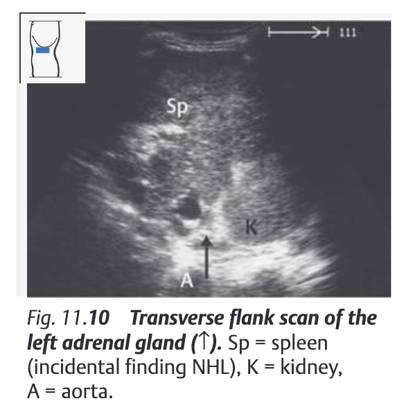
Transverse flank — left adrenal between kidney (right on screen) and aorta (left on screen)
Lesion Imaging Features (US + CT/MRI)
Adrenal Adenoma benign
- US: Well-defined, homogeneous, hypo- to isoechoic mass.
- CT: ≤ 10 HU (lipid-rich). Rapid wash-in & washout (APW ≥ 60%).
- MRI: Marked signal drop on out-of-phase vs in-phase (intracellular lipid).
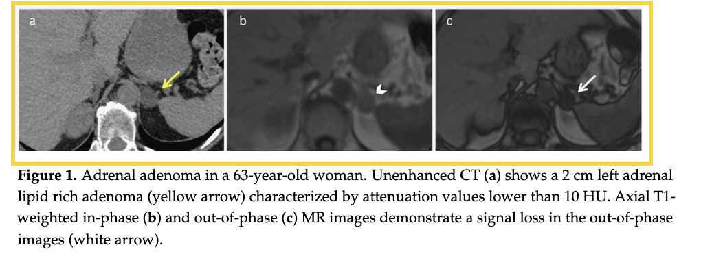
Adrenal adenoma — US (left) and CT/MRI (right)
Adrenal Myelolipoma benign
- US: Hyperechoic mass (macroscopic fat content); well-defined.
- CT: Macroscopic fat density (< −30 HU) — pathognomonic.
- MRI: Bright on T1 & T2 (fat signal); India-ink artifact at fat/soft-tissue interface on OOP. No whole-lesion signal drop (unlike adenoma).
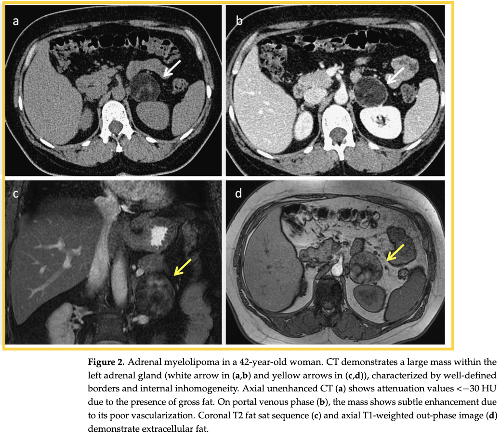
Adrenal myelolipoma — hyperechoic on US, macroscopic fat on CT
Adrenal Cyst benign
- US: Anechoic, thin wall, posterior acoustic enhancement — classic simple cyst criteria.
- CT: Water density (< 20 HU), no enhancement.
- MRI: T1 dark / T2 very bright; no enhancement; no diffusion restriction.
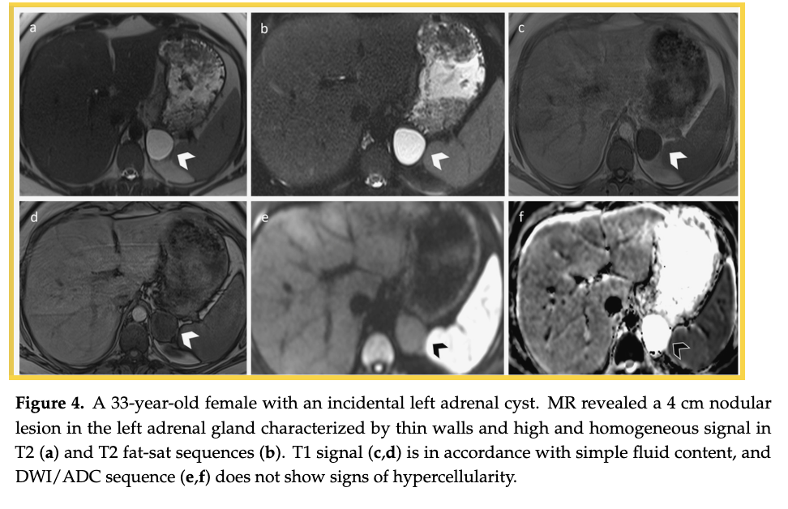
Adrenal cyst — anechoic on US, water density on CT, T2-bright on MRI
Pheochromocytoma functional / potentially malignant
- US: Usually large (> 3 cm) when symptomatic; heterogeneous, mixed echogenicity (necrosis/haemorrhage). ≈ 90% detectable by US.
- CT: > 40 HU (can exceed 150 HU); heterogeneous; no reliable washout.
- MRI: T1 isointense; T2 "lightbulb bright"; strong heterogeneous enhancement; no OOP signal drop.
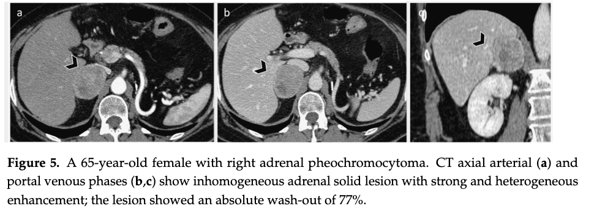
Pheochromocytoma — US or CT appearance
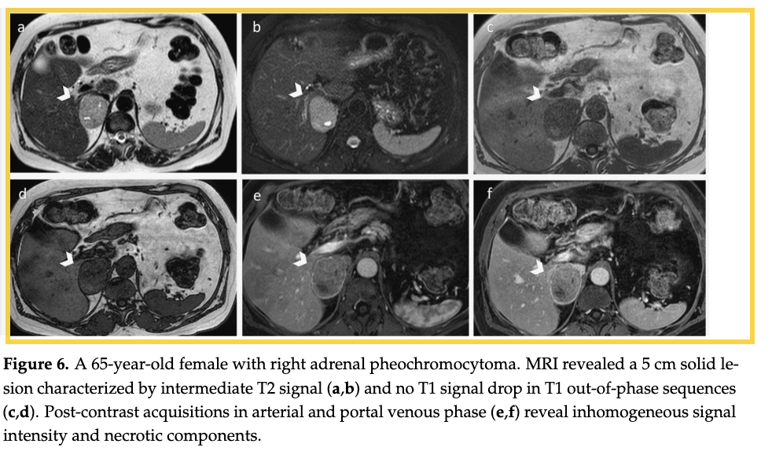
Pheochromocytoma — CT/MRI appearance (heterogeneous, T2-bright)
Adrenal Metastasis malignant
- US: Hypoechoic mass, often bilateral; irregular margin. Pitfall: distinguish from renal cortical cyst.
- CT: > 10 HU, irregular margin; peripheral/irregular enhancement; slow washout (APW < 60%).
- MRI: T1 low / T2 intermediate-high; no OOP signal drop; diffusion restriction in aggressive lesions.
- Common primaries: Lung, breast, RCC, melanoma, colon.
- Note: Echogenicity alone cannot distinguish malignant from benign on US.
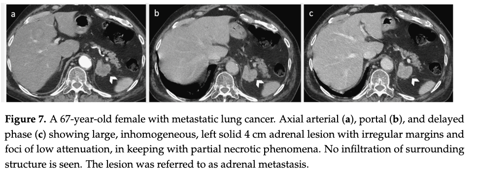
Adrenal metastasis — hypoechoic US or CT appearance
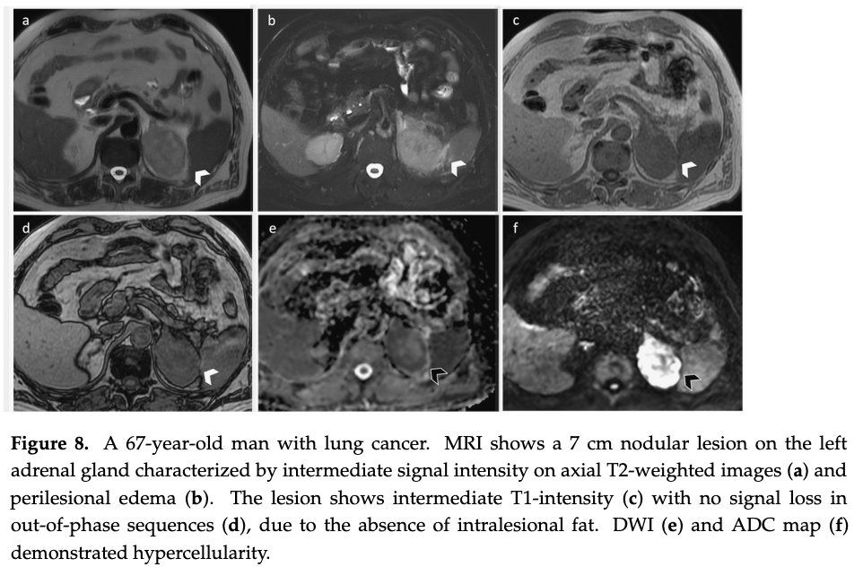
Adrenal metastasis — CT/MRI: irregular margin, slow washout